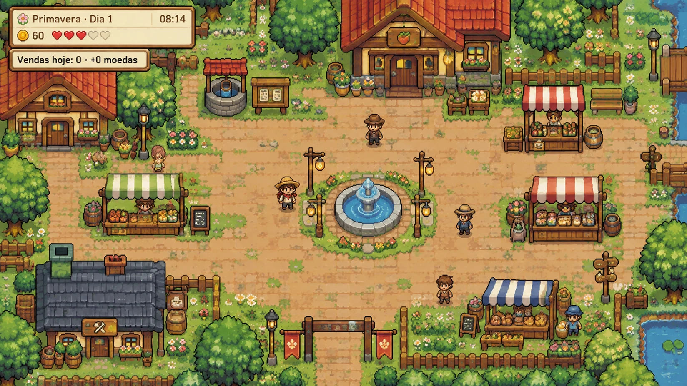
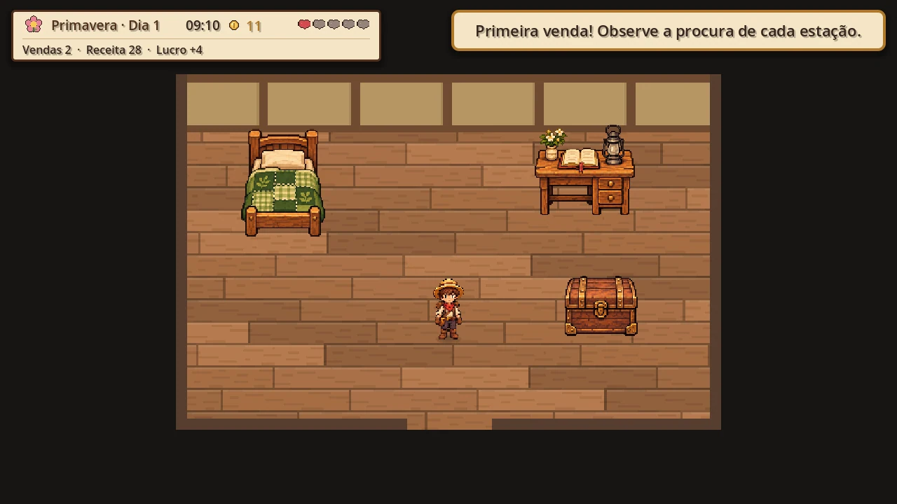
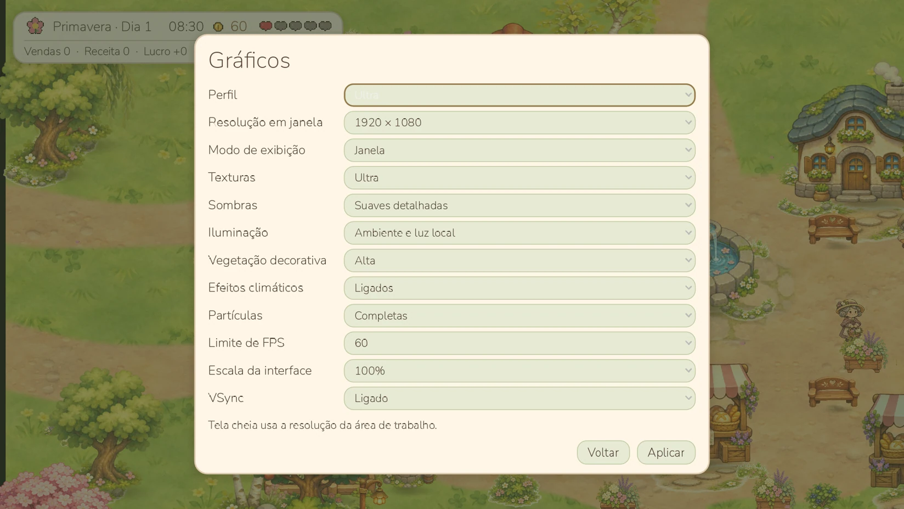

João · O velho comerciante
Conselhos, tendências e histórias da vila. A amizade diária já existe; previsões exclusivas e descontos integram a visão futura.

PROTÓTIPO JOGÁVEL · V0.3
Com apenas 60 moedas e o diário do seu avô, comece uma nova vida em Vale Verde. Construa seu negócio, faça amizades e descubra oportunidades a cada estação.
O mundo não gira em torno de uma fazenda. Ele gira em torno das suas escolhas como comerciante.

A proposta é acompanhar um jovem que deixa a casa dos pais para conquistar independência. Uma pequena banca de madeira e um humilde casebre serão o início da sua jornada. João, o comerciante experiente, Tereza, a agricultora, e o misterioso Forasteiro farão parte de um mundo que muda com o tempo.
Conheça as rotas comerciais imaginadas para a região. Selecione um destino no mapa para descobrir sua especialidade e seu estado de desenvolvimento.
Uma vila acolhedora, com câmera próxima em perspectiva 3/4, personagens expressivos, vegetação variada e iluminação suave.

Chapéu de palha, lenço vermelho, mochila e botas: a identidade do protagonista é preservada nas quatro direções. Estamos estudando proporções chibi, animações, nitidez dos sprites e integração com os cenários.
Estudo artístico do personagem, não sprite final.

Amizade não é apenas um bônus: é uma segunda forma de progredir.
Conselhos, tendências e histórias da vila. A amizade diária já existe; previsões exclusivas e descontos integram a visão futura.
Fornece produtos agrícolas em Vale Verde. Sementes raras, trocas e receitas especiais fazem parte do plano.
Sua chegada sazonal já está limitada ao outono. O mistério de sua história e as raridades ainda serão aprofundados.
Mercado regional, amizade diária e encomendas locais no protótipo.
Entregue pães, conquiste confiança e financie a iluminação das pontes. A primeira obra persiste no mapa após salvar.
Oferta, demanda, clima, qualidade e concorrência influenciam os preços. Compre, administre estoques, negocie, venda e reinvista para expandir sua banca até uma rede comercial.
Flores, sementes e ervas.
Frutas, refrescos e visitantes.
Colheitas, festival e o Forasteiro.
Lenha, mantas, chás e escassez.
Experimente um pequeno desafio de compra e revenda com 60 moedas. Escolha a estação, ajuste a quantidade e descubra quanto poderia lucrar.
Simulação ilustrativa do site: valores inventados para explicar a mecânica. Não é o balanceamento oficial nem uma demo do executável.
Comece em um casebre, melhore sua banca e, futuramente, administre lojas, depósitos, funcionários e rotas comerciais. Invista também na comunidade: iluminação, pavimentação, pontes, mercados, escola e saúde. A primeira obra de iluminação já foi testada; as demais são planos.
Capturas reais de protótipos em diferentes etapas. A arte, a interface e as mecânicas continuam em revisão.




Sprites HD, sombras de contato, profundidade, câmera e variedade ambiental.
Economia sazonal, clientes, reputação, estoque e expansão regional.
PC em HD e Full HD como prioridade. Nintendo DSi e Wii U são objetivos futuros de portabilidade, sem versão anunciada.
Escopo inicial planejado: praça, banca, três personagens, quatro estações e cerca de 20 produtos. Sem data de lançamento anunciada.
Atualizado com a documentação de 24/11/2026. Marcos verificáveis, sem porcentagens inventadas.
24 mercadorias · 2 fornecedores em Vale Verde · 28 dias por estação · checkpoints com backup
19/07/2026 — Constituição, Vale Verde, comércio e estações definidos.
24/11/2026 — Base recuperada, despedida, checkpoint, negociação, rota regional e primeira obra persistente.
24/11/2026 — Guache suave, quatro direções, câmera próxima, sombras de contato e perfis HD/Ultra testados. Aprovação artística final pendente.
Expansão empresarial e residencial, mais vilas, clima com impacto comercial, festivais, áudio, acessibilidade e balanceamento. Backends nativos de console ainda não implementados.
Godot 4.5.1 · GDScript · Compatibility. O pipeline preserva os masters, gera atlas por perfil e mantém os dados comerciais separados da interface. A execução foi validada no PC; DSi e Wii U têm perfis de assets, mas ainda não possuem versão executável.
Resolução de saída / sprite mestre ou derivado
Base editorial: Constituição 1.2, contexto da sessão, direção artística, documentação técnica, briefs de banners, continuidade, README, roadmap e versões — revisão de 24/11/2026.